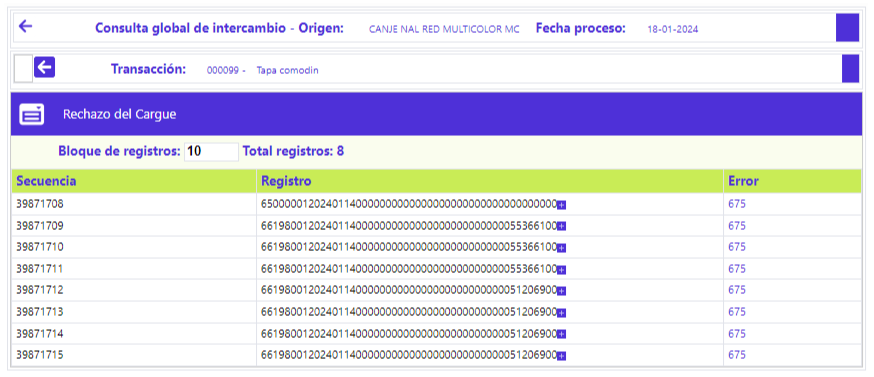

Consulta global de intercambio
Rechazo cargue: Mediante esta opción se posibilita la consulta de los registros de transacciones que no fueron leídos del archivo que contenía el movimiento dentro del que viajaban dichos registros.
El formulario cuenta en la parte superior con un botón para volver al formulario principal de la Consulta global de intercambio.

Secuencia |
Campo de salida que ilustra el número con el que se identifica el cargue de archivos o integración del movimiento ingresado por un mismo origen para una misma fecha de proceso. |
Sucursal |
Campo de salida que despliega el código que identifica la oficina por medio de la que ingresó el movimiento |
Moneda |
Despliega la abreviatura definida por la franquicia que identifica la Moneda original de la transacción. |
|
Registro |
Muestra la cadena de caracteres que conforman el registro físico no leído. |
Error |
Muestra el código de error asociado al registro rechazado. |
Estado |
Campo de salida que ilustra con un Por Procesar que el registro se arregló y está pendiente de proceso o Rechazado cuando el registro fue rechazado nuevamente por la validación. |
Número paquete |
Campo que ilustra el número del paquete que identifica el movimiento por clase o tipo de transacción, lo que facilita su ubicación en caso de ser necesario. |
Secuencia recepción |
Campo de salida que ilustra el número con el que se identifica el cargue de archivos o integración del movimiento ingresado por un mismo origen para una misma fecha de proceso. |
Tapa contable | Pendientes | Intercambio | Formulario principal